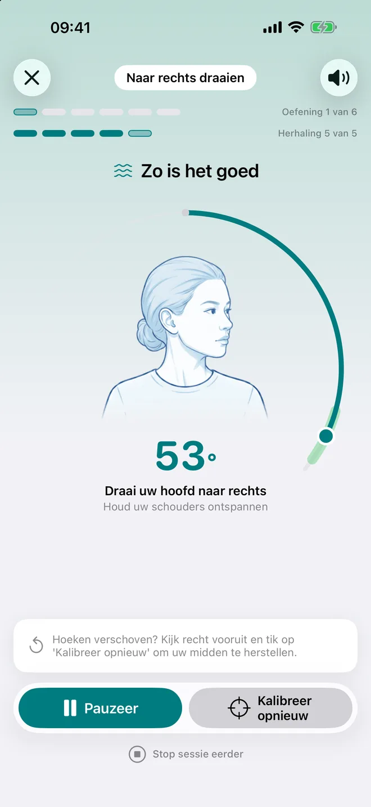
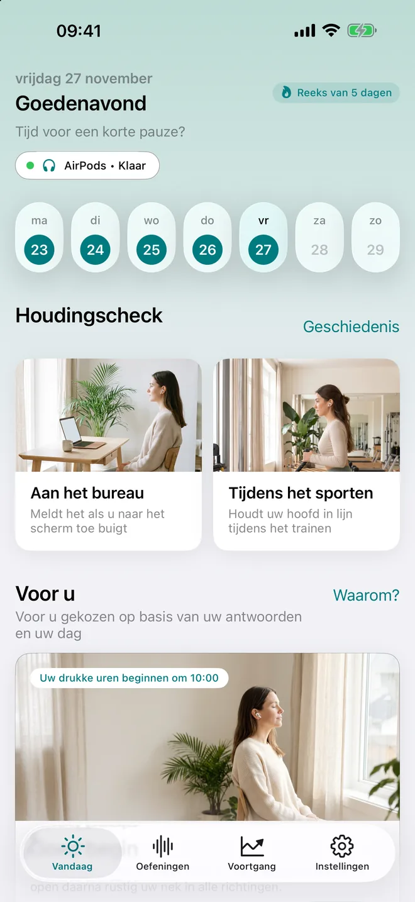
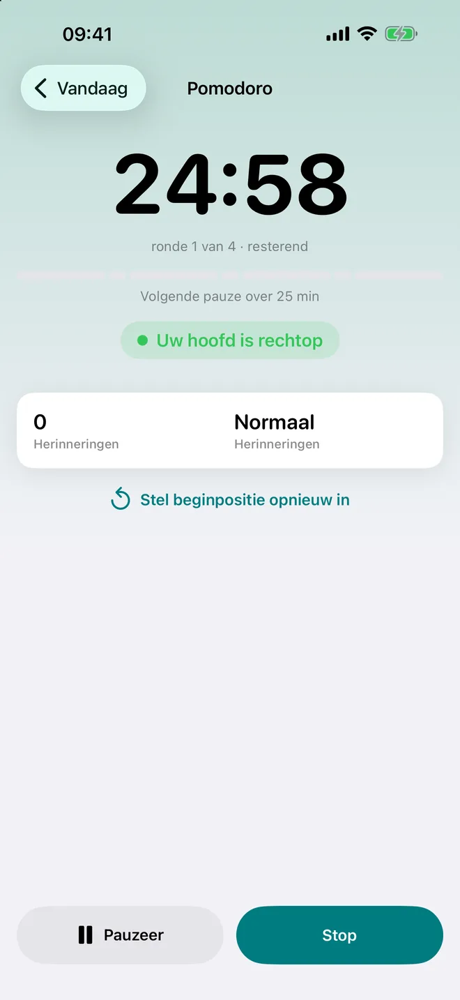

Nek
Draaien, zijwaarts kantelen, omlaag en omhoog kijken, kin intrekken. AirPods meten de hoek en tellen de herhalingen; zonder AirPods geeft Nodly het tempo aan op tijd.
Korte oefeningen voor uw nek, ademhaling, ogen, handen en benen, en bureauyoga. Met uw AirPods meet Nodly uw nekbewegingen, volgt het uw houding en laat het u weten als uw hoofd te lang omlaag blijft.
Download in de App StoreVoor iPhone en iPad · Met compatibele AirPods, of zonder

Niet alleen uw nek
Draaien, zijwaarts kantelen, omlaag en omhoog kijken, kin intrekken. AirPods meten de hoek en tellen de herhalingen; zonder AirPods geeft Nodly het tempo aan op tijd.

Lange uitademing, boxademhaling en gelijkmatige ademhaling, 1, 2 of 3 minuten, in het tempo van een tekening en een zachte tik.

Een pauze van twee minuten weg van het scherm: kijk in de verte, knipper langzaam en rust daarna met uw ogen dicht.

Polsrekoefeningen, polsrondjes en handen openen en sluiten, voor dagen achter toetsenbord en muis.

Hielheffen, tenen heffen, knie strekken en zittend marcheren, zonder van uw stoel op te staan.

Zittende kat-koe, zijwaarts buigen en draaien, plus schouderoefeningen om los te komen tussen afspraken.
Alleen de nekmeting gebruikt AirPods. Al het andere werkt zonder.
Gemeten met uw AirPods
De bewegingssensoren in uw oordopjes volgen de hoek van uw hoofd. Bereikt u het doelbereik, dan laat Nodly dat weten met een geluid en een tik en telt het de herhaling voor u. De doelen passen zich aan uw eigen bewegingsbereik aan.
Nodly gebruikt de bewegingssensoren in uw oordopjes. Geen camera, geen extra apparaat.
Kijk recht vooruit en houd u een paar seconden stil. Nodly neemt dit als 0°.
Bereikt u het doelbereik, dan laat Nodly dat weten met een geluid en een tik, en telt het de herhaling voor u.
0°
Rechts
Sleep naar rechts tot u het groene bereik haalt en kom dan terug naar het midden.
Herhalingen: 0


Houdingscheck
Volgt uw hoofd terwijl u werkt, van 30 minuten tot 2 uur, of in Pomodoro-rondes van 25 minuten werk en 5 minuten rust.
Zakt uw hoofd bij staande oefeningen, dan laat Nodly het binnen enkele seconden weten. Bij oefeningen die u liggend doet, pauzeert u het gewoon.
Vergrendel uw telefoon en werk door. U ziet de resterende tijd op het toegangsscherm en kunt daar pauzeren of stoppen.
Met Siri, via het bedieningspaneel of met een focusautomatisering in Opdrachten.
“Start Houdingscheck in Nodly”
Routines
Begin met een kant-en-klare routine zoals Goed begin of Schermpauze, of kies bewegingen uit de bibliotheek en zet ze in uw eigen volgorde. 'Voor u' op het scherm Vandaag stelt er een voor die past bij uw dag en uw drukste uren.
Voortgang
Uw reeks, uw week en hoe uw tijd verdeeld is over nek, ademhaling, ogen, handen en benen, in één oogopslag. En terwijl u oefent, ruimt een klein 3D-bureau zichzelf op.
De details
Uw geschiedenis en routines worden via uw eigen iCloud gesynchroniseerd tussen uw iPhone en iPad.
Nekoefeningen kunnen op tijd lopen. De andere oefeningen hebben nooit AirPods nodig.
Een dagelijkse herinnering, bureaupauzes tijdens uw drukke uren en een weekoverzicht, elk optioneel.
Gesproken aanwijzingen, geluiden en haptische feedback begeleiden u, zodat uw ogen van het scherm kunnen blijven.
Grotere tekst, VoiceOver en Verminder beweging, op iPhone en iPad.
Nederlands, Engels, Turks, Duits, Spaans, Frans, Italiaans, Portugees, Russisch, Japans, Koreaans en Chinees (vereenvoudigd en traditioneel).
Privacy en vertrouwen
Bewegingsgegevens worden op uw telefoon verwerkt en ruwe bewegingsgegevens worden nooit bewaard. Geen account nodig.
Bewegingen horen langzaam en prettig te voelen. Voelt iets niet goed, stop dan meteen. Nodly dwingt u nooit.
Nodly is een welzijnsapp; het stelt geen diagnose en behandelt geen aandoening. Hebt u een nekaandoening, overleg dan met een zorgverlener voordat u begint.
Juridisch
Geen account, en uw bewegingsgegevens blijven op uw apparaat. We verzamelen alleen anonieme gebruiksstatistieken als u dat toestaat. Geen advertenties, geen tracking, geen verkoop van gegevens.
Lees de volledige tekstNodly wordt aangeboden als maand- of jaarabonnement, en wie in aanmerking komt, krijgt een gratis proefperiode van 7 dagen. U kunt altijd opzeggen in de instellingen van uw App Store-account.
Lees de volledige tekstBeweeg langzaam en alleen binnen een prettig bereik. Stop meteen als u pijn, duizeligheid of een doof gevoel hebt.
Lees de volledige tekst